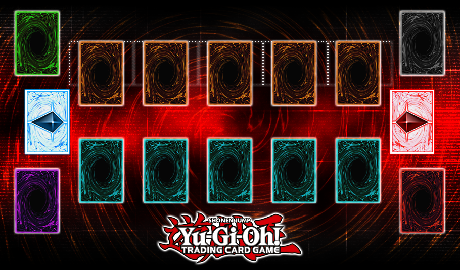

Graveyard: If a card is destroyed, they are usually sent here unless said otherwise. To the right of the rightmost Monster Zone.
Banish: A special zone where destroyed cards are sent. A card effect must state that the targeted card is banished. To the right of the Graveyard
Monster Zones: There are a total of 5 zones where you can place your monster cards. Placed in the forefront of the field.
Spell/Trap Zones: There are a total of 5 spell/trap zones where you can place such cards. They are right beneath each monster zone.
Field Spell: This also counts a spell zone exclusive for field spells. Placed top left of the field.
Deck: Usually consists on 40-60 cards inclusive of normal/effect/tuner/pendulum monster cards, spell cards, and trap cards. Below the Graveyard, and to the right of the rightmost Spell/Trap Zone.
Extra Deck: This consists of special monster cards (Fusion, Synchro, Xyz) that you can special summon.
Pendulum Zones: Designated for pendulum monsters. Treated as a spell zone. There are two pendulum zones, on the rightmost and leftmost of the field.